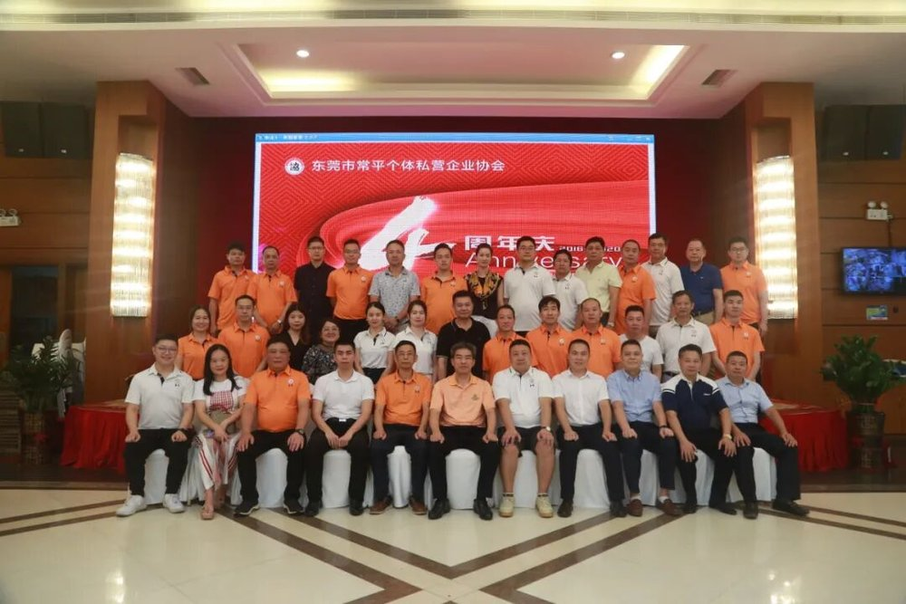
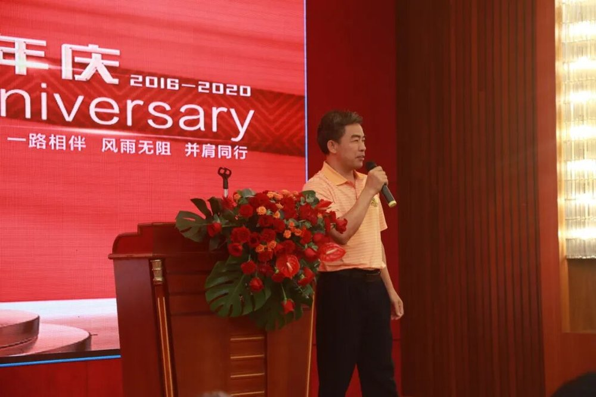

「一路有你，感恩同行」，常平个体私营企业协会举行喜迎成立四周年庆典活动，会员们共聚一堂，回顾携手走过的四年。
过去一年，协会新增理事成员12位，其中副会长以上成员2位、理事成员10位，在册登记理事以上成员达88位；组织会员交流活动48次、社会公益活动／志愿活动17次，参加市协会与政府部门组织的活动（会议）46次，服务会员878家／次，获得奖牌奖杯、证书5个／份。


一路有你，感恩同行
2020年，面对疫情给企业开工、人力与物料采购带来的影响，市个私协会组建东莞网红直播带货基地，协会组织会员参加培训会议，动员会员企业拓展电商直播新渠道；同时多次举办专业大讲堂，以线上授课形式邀请实操专家讲解各类重要称号申报与优惠政策要点。疫情期间，协会还组织会员为防控工作提供防疫物资、食品与资金等捐助。
协会提出，将紧紧围绕市镇重点工作部署，继续为个体户和私营企业做好服务，加强自身建设，发挥桥梁纽带作用；建立基层联系点，并在推动政府职能转变和放管服改革中积极献言献策。庆典在会员的愉快交流中圆满落幕。